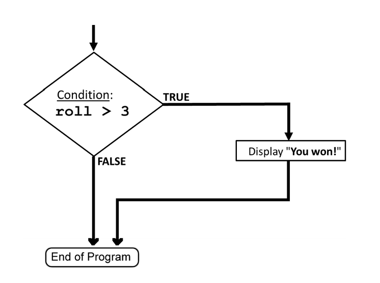

What is a conditional, conceptually?
An if statement is a decision point in your program.
When the program reaches an if, it stops and asks a yes/no question.
Depending on the answer, the program follows one path or another.
Think of it as a fork in the road:
- If the condition is
true, one block of code runs. - If the condition is
false, that block is skipped (or theelseblock runs).
Only one path runs. Never both.
Flow Charts
A flow chart is a graphical representation of an algorithm using various symbols to depict different types of actions or decisions. It helps in visually understanding the flow of logic in a program.
Common Flow Chart Symbols:
- Oval: Represents the start or end of the process.
- Rectangle: Represents a process or instruction.
- Diamond: Represents a decision (e.g., an
ifcondition). - Arrows: Indicate the flow of control
Example: Rolling a Die (Flow Chart)
You roll a die, and if your result is greater than 3, you win.

The Basic if() Statement
if (condition) {
statement(s) to perform when the condition is true
}Important: The condition inside an if() is an expression.
Just like x + 5 evaluates to a number, a condition evaluates to a Boolean value:
true or false.
We call this a Boolean expression—an expression whose value is either true or false.
Boolean expressions named after George Boole (1815-1864), English mathematician and philosopher.
Rolling a Die: Code Example
int roll;
roll = int(random(1, 7));
println("Roll: " + roll);
if (roll > 3) {
println("You win!");
}Notice:
if (roll > 3)is no different in principle from:
boolean result = roll > 3;
if (result)Programs are no longer just “top to bottom.”
With conditionals, execution becomes selective.
The condition is checked only when execution reaches the if statement, not continuously.
The if–else Statement
Sometimes we want the program to do one thing if the condition is true, and a different thing if it is false.
if (condition) {
// runs if condition is true
} else {
// runs if condition is false
}
Exactly one of these blocks runs.
Common pitfall: = vs ==
-
=means assignment -
==means comparison
You cannot ask a question using =.
If you are asking “is this equal to…?” you need ==
Conditionals are what turn a sequence of commands into a program that can think.